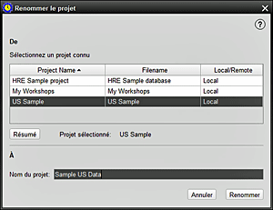

Cette option du menu Projet vous permet de renommer un projet HRE existant, en conservant la base de données dans son emplacement existant. 1. Mettez en surbrillance le projet que vous souhaitez renommer. Dans cet exemple, le projet est renommé << Immigrants >>. Seuls les projets précédemment consultés peuvent étre renommés 2. Notez que vous ne pouvez pas renommer un projet actuellement ouvert (un message de conseil apparaîtra) - il doit être premièrement fermé 3. À des fins de vérification, un RÉSUMÉ du projet choisi peut être consulté avant de continuer 4. Dans l'espace prévu à cet effet, entrez le nouveau nom de ce projet. Les espaces, les chiffres, les lettres majuscules / minuscules et les caractères de nom de fichier habituels sont autorisés. Le nouveau nom doit être un nom de projet unique, quel que soit son emplacement 5. Cliquez pour RENOMMER le projet ou ANNULER pour ne pas continuer 6. Le projet a maintenant été renommé "Nouveaux immigrants" dans cet exemple, et la liste des projets sera alors mise à jour 7. Le processus de changement de nom du projet est uniquement à des fins d'accès et d'identification des utilisateurs, car le nom de fichier ("Immigrants_to_AUS" dans ce cas) reste inchangé sur l'ordinateur. |
|
Sujets Relatifs |